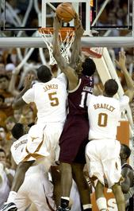

|

Laura Skelding/AMERICAN-STATESMAN
Texas senior forward Damion James and freshman guard Avery Bradley will be on alert against Kansas State just as they were against Texas A&M's David Loubeau, center, on Saturday.
|
By Mark Rosner
AMERICAN-STATESMAN STAFF Updated: 11:17 p.m. Sunday, Jan. 17, 2010
Published: 6:57 p.m. Sunday, Jan. 17, 2010
MANHATTAN, Kan. - The Longhorns, three games into their defense of the No. 1 ranking, come to a place where the opponent is formidable, the crowd is raucous, and the referees might just wear out their whistles. They come to face No. 13 Kansas State, an in-your-face team that reflects the personality of its coach, Frank Martin. The Wildcats spend much of their games fouling and shooting free throws. All 12,528 tickets have been sold, and coach Rick Barnes hopes the Longhorns can summon the fortitude Texas A&M showed in the packed Erwin Center on Saturday during a 72-67 loss to the Longhorns in overtime. "It's gonna be flipped Monday," Barnes said. "We're not gonna have the house. I hope we go in with the same intensity A&M brought." Kansas State has 13 consecutive victories at home, its longest streak in Manhattan since winning 20 straight in 1981-82. The Longhorns and Wildcats would not be called rivals, but you couldn't tell by their games in recent seasons. Barnes is 8-4 against Kansas State. The Longhorns have won four of the last six, but five of those games were decided by four points or fewer. Texas has won the last two in Manhattan. K-State has a two-game winning steak in Austin. |